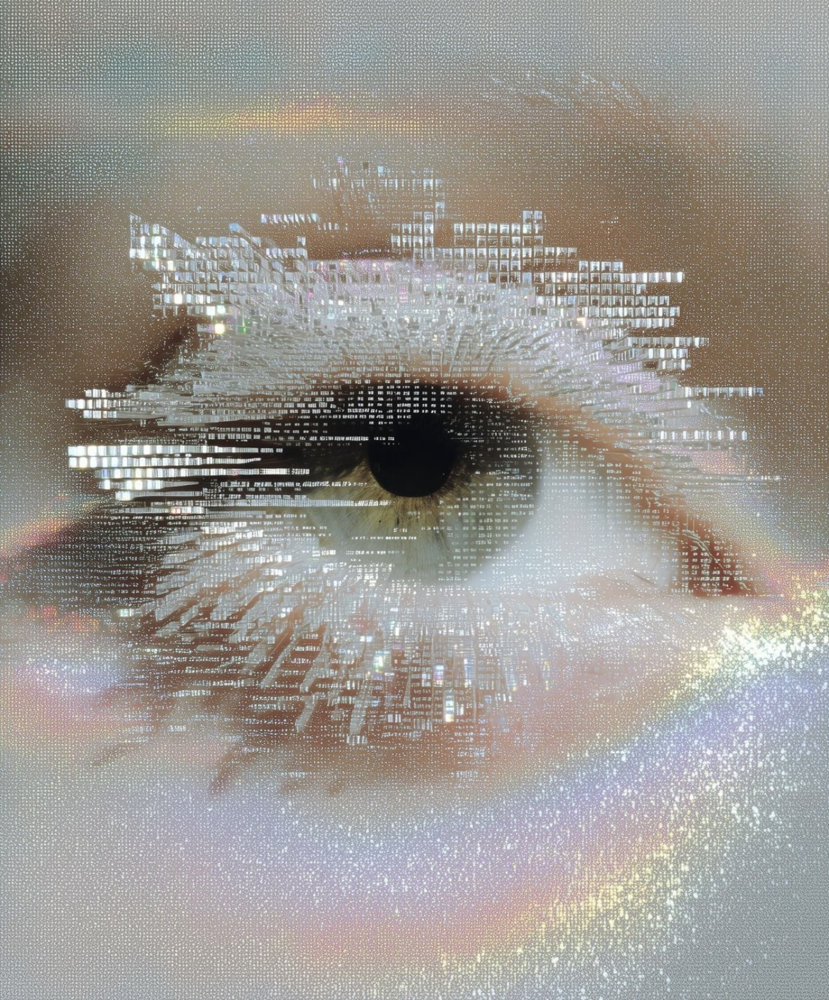

Gnōthi Seauton
向内探索，是通往至高智慧的必经之路。
SCROLL EXPLORE
向内探索，是通往至高智慧的必经之路。

这不仅仅是一句哲理，它是构建强大内心的基石。在这个信息碎片化、价值多元交织的时代，保持清醒的自我认知尤为奢侈。
当我们在数字汪洋中沉浮，唯有那只向内凝视的眼，能穿透迷雾，洞见本质的微光。它是理性的晶体，也是灵感的源泉。
从商业洞察到品牌美学，每一次精准的切入，都源于对人性底层逻辑的深刻剖析。认识自己，方能理解世界。
以跨界的思维，打破固有范式；以审美的执念，重塑商业叙事。在这里，哲学不再是空谈，而是实用的利器。